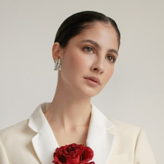
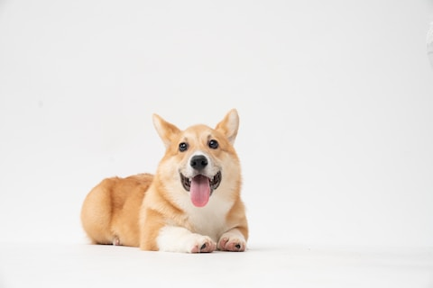
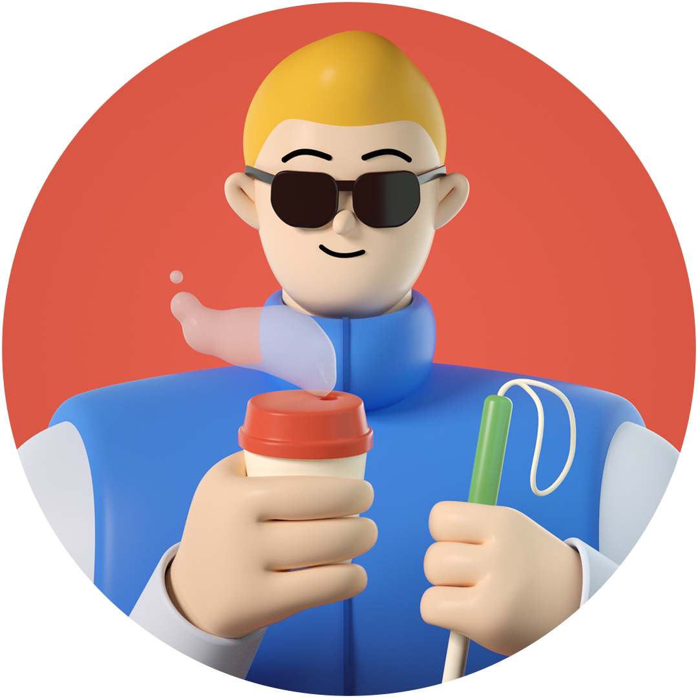

Avatars are circular, warm-toned, shot at eye level. The PNG is the neutral placeholder fill used where a photo is absent.
These are the only bitmaps in the system — no stock library, no generated imagery.